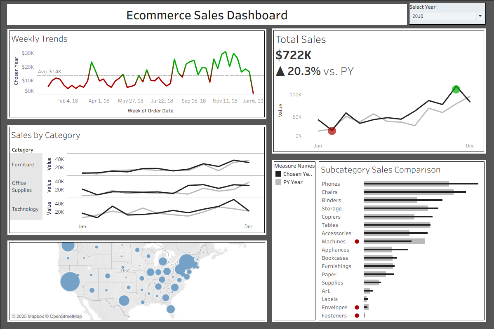
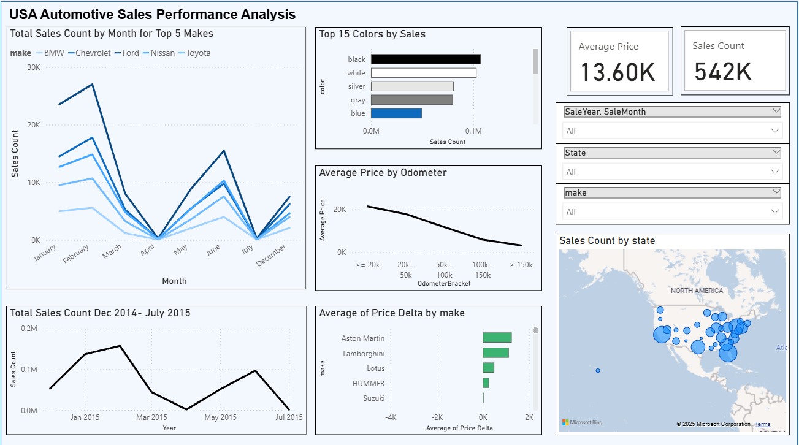

Projects

Coffee & Cream Sales Dashboard (Power BI)
Created a Power BI dashboard to analyze sales at a fictional bakery and coffee shop. The report includes monthly transactions, item performance, payment method usage, and profitability metrics.
View on GitHub

E-Commerce Sales Analysis with Tableau
A multi-year Tableau dashboard analyzing U.S. e-commerce sales from 2015 to 2018. Includes geographic insights, category comparisons, seasonal trends, and year-over-year performance analysis.

DrivePro AutoHouse Vehicle Sales Analysis
Used Power BI to analyze U.S. vehicle sales from 2014–2015. Included trends, pricing, and state comparisons.
View on GitHub